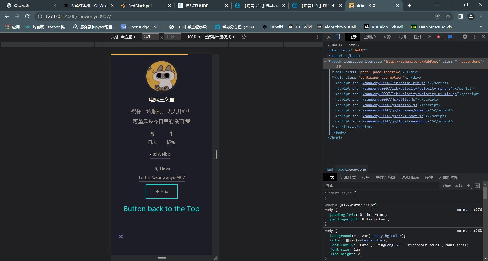
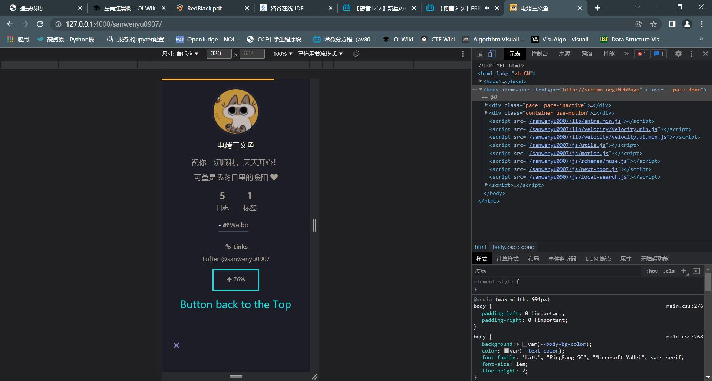

New Changes
就是一些尽可能改完后又出现了那么一两个，新的，你可能想要修改的地方。
about Themes and Schemes
about Themes
先说一点点，关于主题颜色…那两个都是参考啦参考啦…我个人是希望能够听一下你的意见啦，
亮-暗模式中：
Solarized是金色-青色，是因为那个人当初设计就是想模拟阳光洒下来的感觉；
Liellized是金色-紫色，是因为这个是我个人为 Liella! 设计的主题色。不是说不能用已有得到这两种配色，是我更想知道， 你想要什么样的颜色，你认为什么样的颜色适合可堇。
（我个人想过一个
黄绿色-蓝紫色的方案，亮色调用黄绿色是参考的《装模作样》中堇提到的“与银杏关联的设计”，虽然文中的她所指的可能并非侧重于颜色（可能是形状等等）但这个使我想了想确实符合可堇二人留给我们的印象，就像秋天午后公园里阳光下的银杏叶一样…蓝紫色是参考的堇-violet-紫罗兰这一意象以及《nonfiction》的演出服。抱歉这个方案我还没做出来就先提出来了）最主要的是关于这个，我想听听你的想法
qvq…可能是我当时没说清楚，主题颜色是我们可以再商量与设计的，当然也可以放到以后再更改…
_(:з」∠)_about Schemes
就是说，除了手机端的
Pisces与Gemini不能展开侧边栏之外，四个子主题都是响应式（会根据不同屏幕尺寸形成不同的布局）的，Mist和Muse一样，也可以在手机上展开侧栏。我没有别的意思，就是确认一下你当时说选
Muse确实是因为认为它更好看，而不是因为我只给Muse放了三张图，其他的都只放了一张。（这四个我都放了官方的链接啊…官方的演示肯定比我要详尽得多啊…
MuseOfficial DemoMistOfficial DemoPiscesOfficial Demo-
如若没有问题的话，关于这个方面我便不再多过问。
Sidebar and Button back to the Top
子主题更新为Muse后，令我也没想到地，回滚按钮的位置发生了改变：
- 游离的回滚按钮从右下角迁移到了左下角…我阅读了这个主题项目以前版本的源码，个人推测，这样做似乎是为了使回滚按钮和侧栏按钮靠齐。

- 设于侧栏的回滚按钮仍然在侧栏中，但需要展开侧栏才能使用…不过鉴于
Muse（包括Mist也是）在手机端也能展开侧栏，所以在手机上也可以使用侧栏的回滚按钮。 

情况发生了变化，我觉得这个有必要说一下。
about Subtitle
标题可以理解…但副标题是我当时临时写出来占位用的，确定不改一改吗？

当然如若你坚持用这个临时写出来的副标题的话，我便不再多问，知道你想到一个新的副标题我再做修改。
Configured Items
之前我们已经配置过的选项，如若还有想改的请随时提出。
Theme
首先是主题颜色。这个是我自己根据Solarized配色方案，参考 Liella! 的成员代表色，修改出来的配色方案，我个人称呼其为Liellized。
由前端工程师 Ethan Schoonover 1 设计的Solarized原案：https://ethanschoonover.com/solarized/
（没错，其实这个最初只是一个代码配色方案qvq，但是我根据里面的部分颜色关系，制成了我自己的一套配色模板。）
- 从
Solarized生成的网站配色方案 - 从
Liellized生成的网站配色方案
但这两个只是参考，关于主题颜色，恐怕需要简单商议，不一定会用这两个当中的某一个。
Scheme
这个网站其实是根据一个叫Hexo2的博客生成框架生成的，使用了一个叫作NexT3的主题，这两个项目都是开源的。NexT是一个极其庞大而复杂的主题系统，拥有庞大的社群支持与用户扩展，在Hexo的社区中比其他人所写的开源主题具有压倒性的人气优势。
同时这是一个支持响应式布局的主题，这意味着其会根据不同屏幕尺寸形成不同的布局。
其包含四种子主题方案：
Muse(Official Demo): 居中排布的主题，侧栏可以自由展开与折叠，手机端也可以展开侧栏：
手机端布局：


Mist(Official Demo): 与Muse类似的主题，顶部header与文字格式略有不同：

Pisces(Official Demo): 在电脑端侧栏常驻，在手机端没有侧栏，非常接近Lofter的「藝」主题：
Gemini(Official Demo): 与Pisces类似的主题：
Sidebar
在任何子主题方案中都可以设置的，侧栏位置或展开的起点，可选左或右。
- 目前为
左；

- 如若是
右。

Dark Mode
当且仅当读者的设备（电脑、手机等）开启暗色模式，或浏览器开启暗色模式的时候，站点随之更换为暗色模式。
这是一个可选项，可以设为适配暗色模式，也可以设为亮色模式常驻。
让我们稍微对比一下：
- 亮色模式
- 暗色模式

Text Areas

这是Pisces子主题方案下，主页的呈现，其中有很多配置项目：
- Title：标题，请用简短的词汇概括这个站点，可以与作者名相异，最好与作者名相异；
- Subtitle：副标题，对标题的补充说明；
- Avatar：头像…
- 可以设置头像框为
方形或圆形； - 可以设置光标划过头像时
转动、快速转动或一动不动；
- 可以设置头像框为
- Author：作者名称；
- Description：简介，但其实是一个“个性签名”位置；
- Social Links : 社交链接，可以放微博、Lofter等等；
Progress Bar
页面加载的进度条。
使用了开源项目Pace4，根据官网，可选如下共14种方案：

颜色可选 黄 | 橙 | 红 | 品红 | 紫罗兰 | 蓝 | 青 | 绿
目前为Minimal方案，绿色。
Reading Progress
分为两个部分：顶端进度条（Top Reading-Progress Bar）与回滚按钮（Button back to the Top）
回滚按钮可以放在侧边栏，但是这种方案下手机端无法显示它：

可选项目：
- 顶端进度条的颜色
黄 | 橙 | 红 | 品红 | 紫罗兰 | 蓝 | 青 | 绿，还可以自定义颜色（当前为#37C6C0） - 回滚按钮的位置：
右下角或侧边栏（当前为右下角）
Bottom Banner
低端横幅文字，可以自定义。

我暂时用了个人喜欢的一句歌词5来补位。
Character Voices
角色们的语言与心理活动，文字样式。（转变为亮色背景后有细微差异）

References
1. Ethan Schoonover: Games, Technology, Education, Communications. ↩
2. Hexo: A fast, simple & powerful blog framework. ↩
3. NexT: Theme for Hexo. ↩
4. Pace: Automatic page load progress bar. ↩
5. 洛天依，言和原创《深夜诗人》 Bilibili: av7400996 2016-12-05 ↩